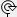

After adding one for more graphic elements can be edited as follows:
Note: Graphic elements need to be selected before they can be edited. For details, see Selecting graphic elements.
Tip: The RoundedRectangleRadiusproperty, specified in pixels, adds support for rounded corners for the following graphic elements: Rectangle, Text, Picture and Button - by default this is 0 (disabled), except for Button which is 2. Values from 5 onward result in rounded corners.
 Moving: Drag the selected graphic elements and/or controls to their required
location. Sizing:
The current selection provides sizing handles
Moving: Drag the selected graphic elements and/or controls to their required
location. Sizing:
The current selection provides sizing handles that can be dragged to resize all the graphic elements
in the selection. Rotating:
Use the
that can be dragged to resize all the graphic elements
in the selection. Rotating:
Use the 
above the center of the vector as its rotation siteEditing nodes:
Graphic elements that are collections of basic shapes have nodes at the
start and end of each constituent, represented as a small square box (). Nodes allow these constituent shapes to be moved, deleted
and added.Properties:
Each graphic element has properties, which affect how it appears and behaves
etc. Properties can either be manually configured or driven by external
values for animation purposes. Behaviours:
Graphic elements and grouped graphic elements provide a task menu, opened
by clicking its